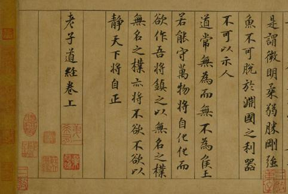

Taoizm i Zen
według Lisy Simpson
z pomocą Marka Puchalskiego
Agenda
- Historia Chin
- Zen wg. Lisy
- Analiza
- Medytacja wg. Lisy
Historia Chin
Hero (2002)
Pierwszy cesarz Chin

Zen wg. Lisy
Pytanie
Skoro gra w golfa to prosta geometria, po co nam trening zen?
Analiza
Laozi Daodejing
Dao De Jing (Tao Te Ching; Księga drogi i cnoty)
Kto?

Laozi (Lao Tzu; Stary Mistrz; Stary Chłopiec)
Kiedy?
Trudno powiedzieć. Jedni: VI w p.n.e. Inni: IV w. p.n.e. Jeszcze inni: Laozi w ogóle nie istniał.
Laozi opuszcza Zhou

Dao De Jing
Koany
Dwie dłonie i mamy klaśnięcie. Jaki jest dźwięk jednej dłoni?
Uczeń: Czym jest Budda?
Mistrz: Trzy funty lnu.
Enso

Taoizm, Buddyzm, Chan, Zen
Co to jest?

Taijitu